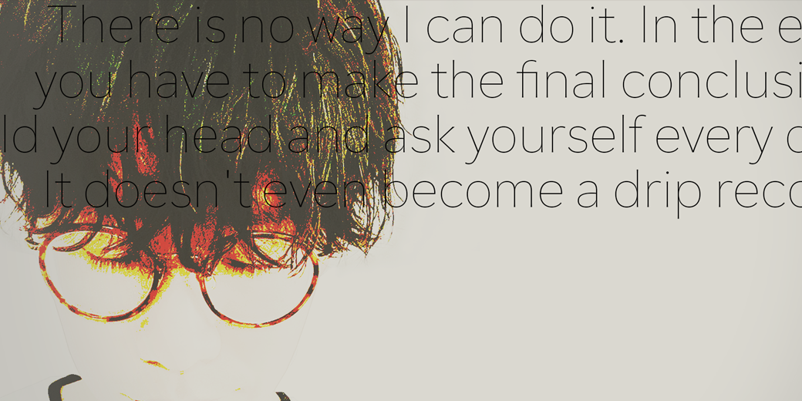
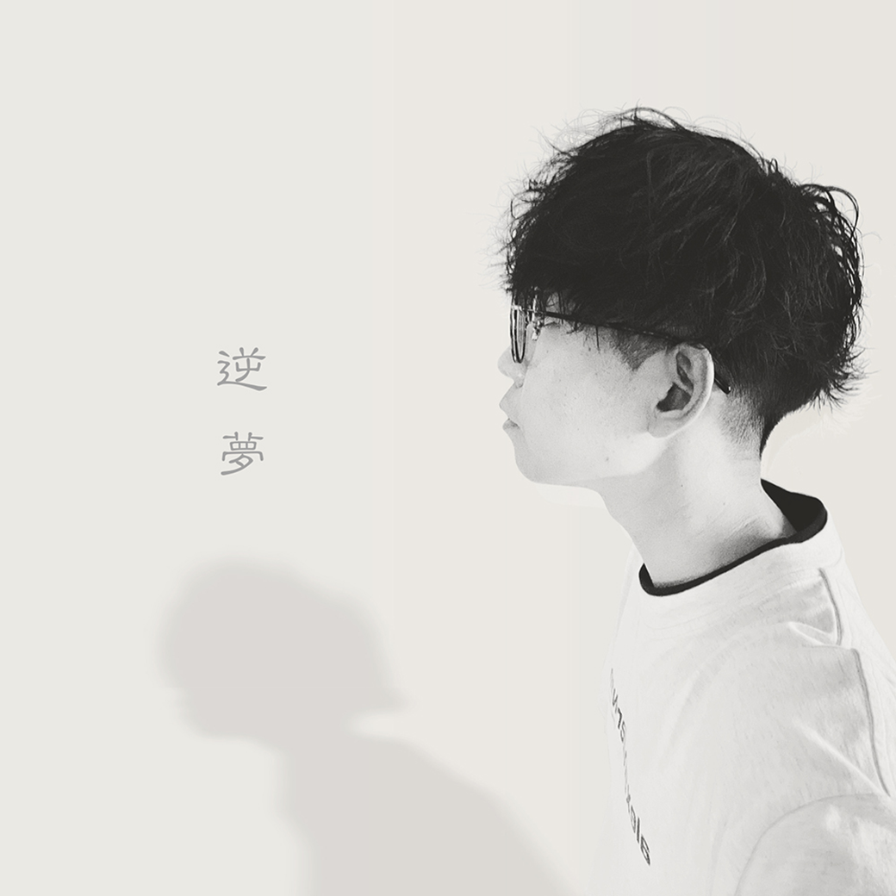
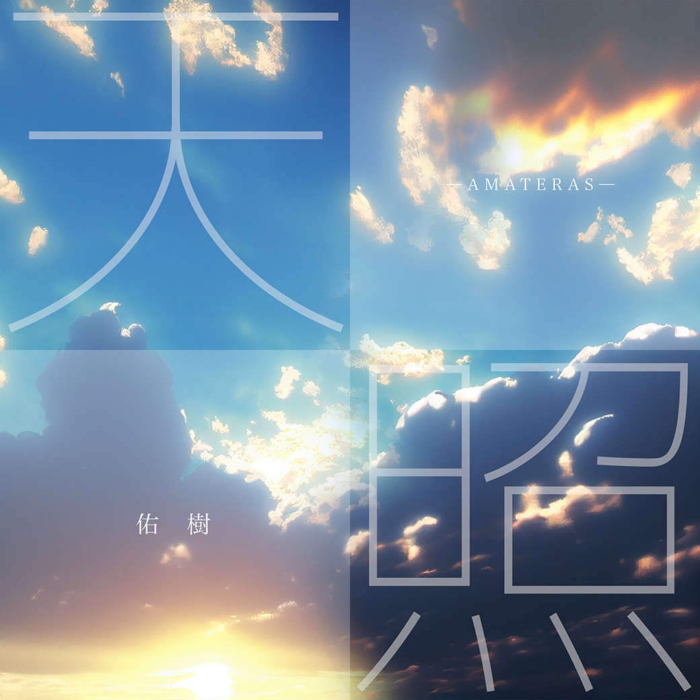
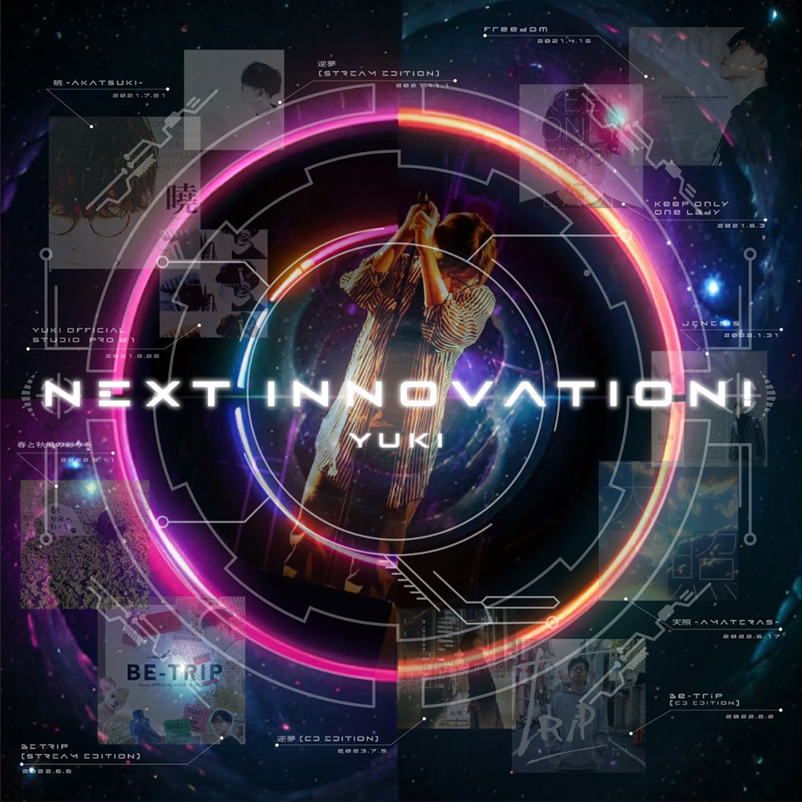
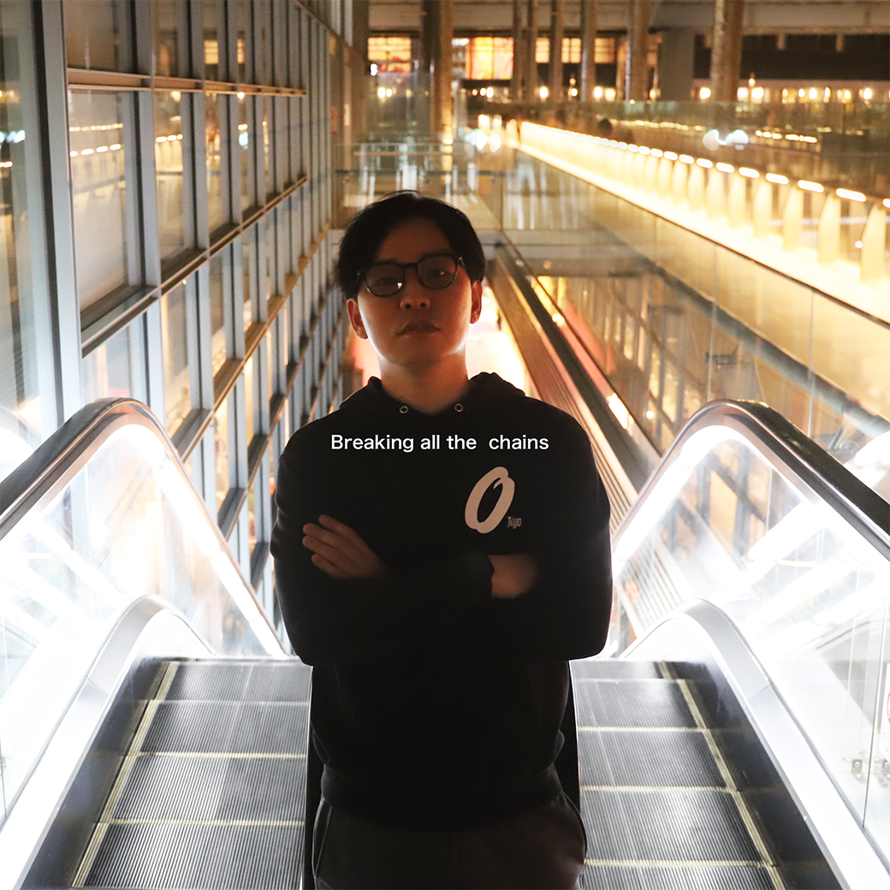
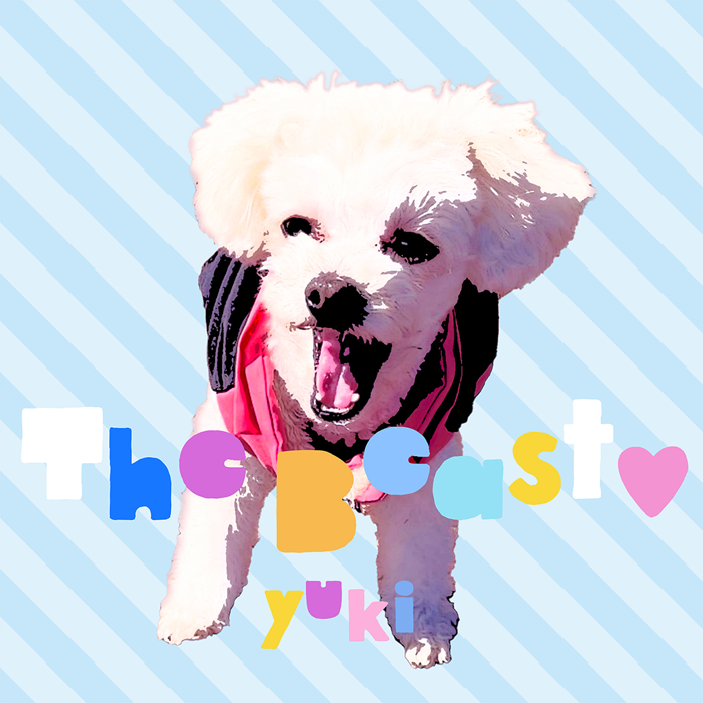
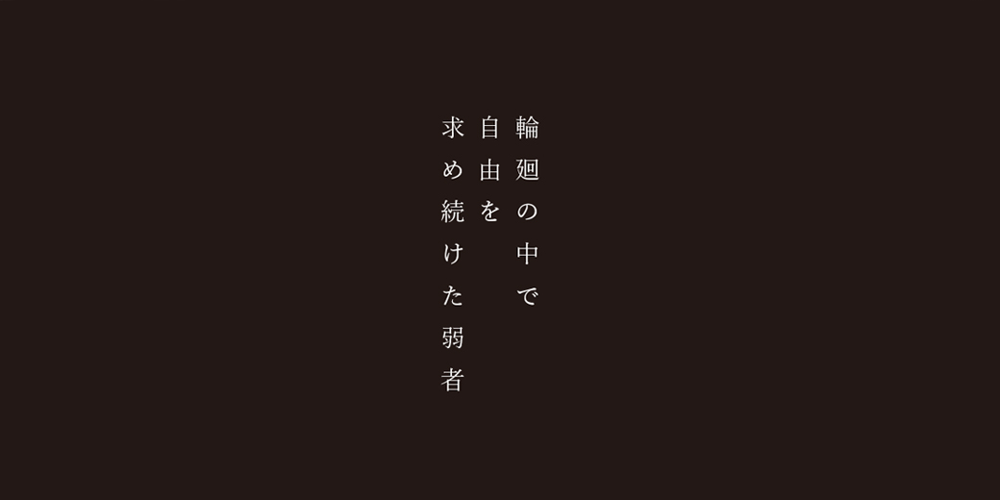

Songs
01
02
03
04
05 06
06 07
07 08
09
10
11
12
13
08
09
10
11
12
13
04 TRACK
Freedom
05 TRACK
Keep only one lady

10 TRACK
曉

01 TRACK
逆夢
08 TRACK
JENESIS
02 TRACK
BE-TRIP
06 TRACK
春と秋風の彩りを

07 TRACK
天照

03 TRACK
Next innovation!

11 TRACK
Breaking all the chains

13 TRACK
The Beast

09 TRACK
輪廻の中で自由を求め続けた弱者
12 TRACK
ウーノ
Next Action
全曲、TuneCoreにて配信中。
TuneCoreで全曲を聴く